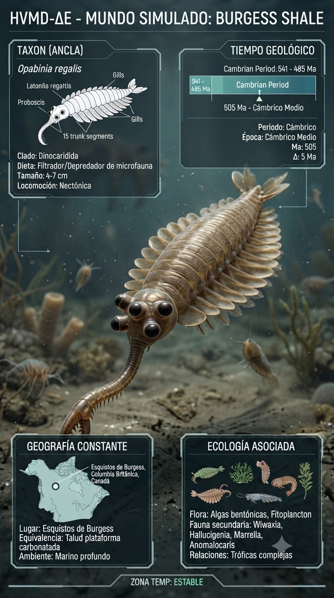
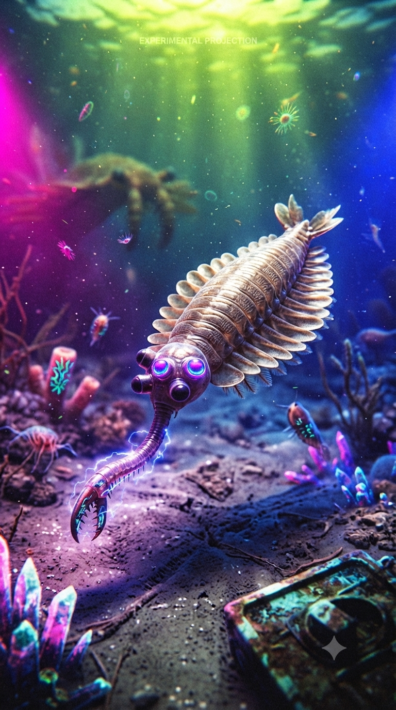
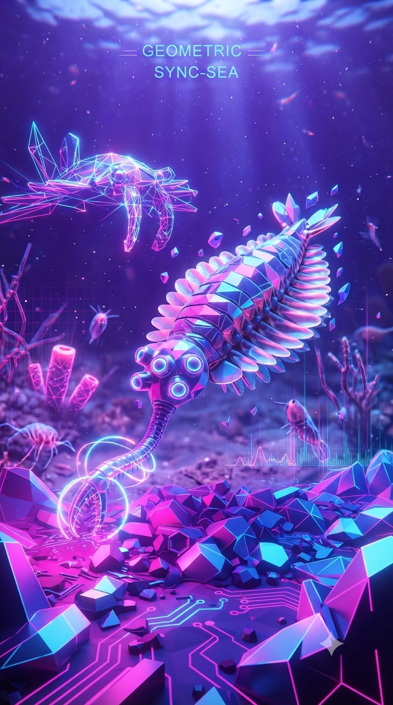

Paleoficha de PalEntropía



TAXÓN:
Opabinia regalis
CLADO:
Dinocaridida (grupo troncal de los euartrópodos)
DIETA:
Carnívoro / Depredador oportunista de pequeños organismos de cuerpo blando.
TAMAÑO:
Hasta 7 cm de longitud (sin contar la probóscide).
LOCOMOCIÓN:
Natación mediante el movimiento coordinado de sus lóbulos laterales.
TIEMPO:
Cámbrico Medio, aproximadamente hace 505 millones de años.
GEOGRAFÍA:
Burgess Shale, Columbia Británica (Canadá).
EQUIVALENCIA PALEOGEOGRÁFICA:
Cuenca marina profunda situada al pie de una plataforma carbonatada.
AMBIENTE PALEAOECOLÓGICO:
Fondos marinos de sedimentos finos sometidos a enterramientos rápidos por corrientes de turbidez.
ECOLOGÍA:
• Flora: Tapetes microbianos y microorganismos bentónicos; ausencia de vegetación macroscópica.
• Fauna secundaria: Comunidad fósil clásica de Burgess Shale, con artrópodos, esponjas, gusanos y cordados basales.
• Nichos: Depredador activo. Sus cinco ojos proporcionaban un amplio campo visual y su larga probóscide terminada en una garra le permitía extraer pequeñas presas del sedimento o capturarlas en la columna de agua.
• Relaciones: Uno de los organismos más extraños de la Explosión Cámbrica. Durante décadas desafió su clasificación, siendo actualmente considerado un miembro basal del linaje que dio origen a los artrópodos modernos.
CLIMA:
Wm18 (Cámbrico cálido). Océanos templados a cálidos con elevada biodiversidad y rápida diversificación de los primeros planes corporales animales.
ESTADO ECOLÓGICO:
Estable. Opabinia representa uno de los ejemplos más emblemáticos de la experimentación evolutiva del Cámbrico, mostrando una combinación única de adaptaciones que precedieron a los artrópodos actuales.